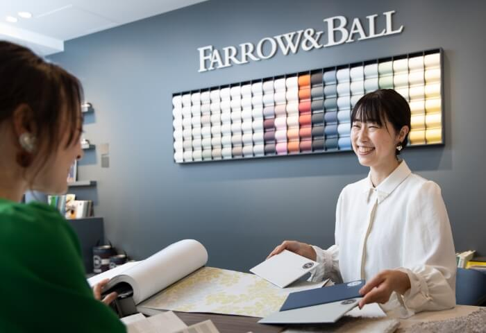
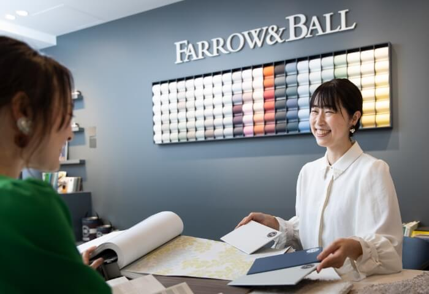
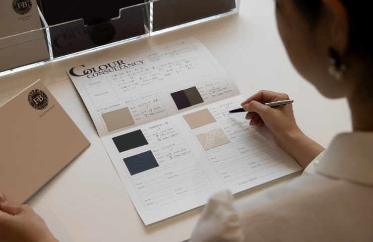
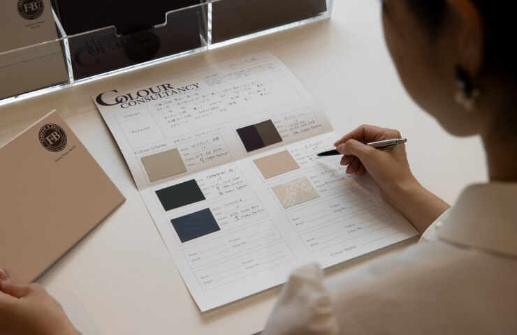

グリーンを
壁一面塗装することで、
植物に包まれたような癒しの空間に。
「植物の「緑」が視覚的に広がるように壁を緑色に。
「心身のバランスをとる」「ストレスを軽減してくれる」といった効果のある緑色がぱっと目に入ることで、一日が終わり、家に帰ってきたとき、疲れた心と身体のバランスを整えてくれる手助けをしてくれます。


輝くわたしをつくる､暮らしをつくる｡
カラー&ラグジュアリーは、
｢カラーコンサルタンシー｣
｢ラグのオーダー
メイド｣｢プチリノベ｣の
３ステップで憧れのインテリアを実現する､
日
本で唯一のインテリアカラー
コーディネートサービスです。

この度、NEWプラン「カラー&ラグジュアリー」がスタートしました。
あなたらしい「色」をコンサルティングし、空間の魅力を最大限に引き出します｡
プロのカラースタイリストがお客さまの趣味や趣向、家族構成、部屋の向きや過ごす時間など､
ライフスタイルのあらゆる内容をヒアリング。
約2000パターンある組み合わせから、お客さまに合った理想のカラースキームを導き出し､
「理想のライフスタイル」を実現します。

理想の暮らし作りのための
ヒアリング

世界でたった一つの
あなただけの
カラースキームを作成

上質な触り心地と､
耐久性を
兼ね備えるフロアラグ

最高級の
原料で作られた
132色の豊富なカラー
新築やリノベーションの
タイミングを待たず
おうちはアップデートできるもの。
ありきたりなインテリアではなく、
｢自分らしい理想の暮らし」を
目指してみませんか？
 

INSPIRATION
BEFORE

AFTER

グリーンを壁一面塗装することで、
植物に包まれたような癒しの空間に。
BEFORE
AFTER
植物のグリーンを壁一面塗装することで、
緑に包まれた癒しの空間に。
BEFORE
AFTER
植物のグリーンを壁一面塗装することで、
緑に包まれた癒しの空間に。
BEFORE
AFTER
植物のグリーンを壁一面塗装することで、
緑に包まれた癒しの空間に。
BEFORE
AFTER
植物のグリーンを壁一面塗装することで、
緑に包まれた癒しの空間に。
リノベーションを始めるときに最初に必要なのが「住まいの色を整える」こと。壁・床・天井・ドアなど、あらゆる建材を選ばなければならないなかで、すべての色を整えることはとても容易ではありません。一つひとつを選んでいくうちに、いつの間にかちぐはぐなインテリアになり、居心地の悪い空間になってしまうことも。
カララグでは、一人ひとりのストーリーを大切にし、あなただけのカラースキーム作りからスタートします。
 

リノベーションを始めるときに最初に必要なのが「住まいの色を整える」こと。壁・床・天井・ドアなど、あらゆる建材を選ばなければならないなかで、すべての色を整えることはとても容易ではありません。一つひとつを選んでいくうちに、いつの間にかちぐはぐなインテリアになり、居心地の悪い空間になってしまうことも。
カララグでは、一人ひとりのストーリーを大切にし、あなただけのカラースキーム作りからスタートします。

Warm Neutral
COLOR SCHEME
Wall Paint
Sulking Room Pink
No.295
Floor Rug
Dolce
No.162
Sofa
INTERIOR STORY
温もりとリラックスを感じさせるリビングルーム。
大人の愛らしさや優しさを感じるくすんだピンクに包まれた空間は、
温かさと癒しをもたらしてくれます。

Relaxed Neutral
COLOR SCHEME
Wall Paint
Down Pipe
No.26
Floor Rug
Glamar
No.691
Sofa
INTERIOR STORY
スタイリッシュで上質なモダンさを感じさせるリビングルーム。
決して強すぎない柔らかなFarrow & Ballの深い色と滑らかな足触りのラグのグレーのグラデーションが、ワンランク上の日常を演出します。
COLOR CONSULTANCY
英国認定のカラースタイリストが、家具や床の色を考慮しながらカラースキームを作り、住まいの色を整えます。カララグでは、考え抜かれた色彩計画をもとに、あなただけの特別な日常を演出する空間を作り上げます。

世界中から愛されてきたFarrow&Ball のペイントで壁を彩ります。最高級の原料のみでつくられたFarrow&Ball が生みだす132 色もの美しい色は、どんなときも心に寄り添ってくれるような優しいカラーバリエーション。どの部屋にも安心して使用できる、環境にも配慮されたペイントは、包み込んでくれるような温かさと安らぎのある空間を演出します。
空間のアクセントはもちろん、埃の舞い上がりやスリップ防止効果もあるフロアラグは、アレルギーの方やペットのいるご家庭にもおすすめのアイテム。ドイツJAB社のフロアラグは、足を踏み入れた瞬間に捉える毛足の感覚が、脳をオフモードにスイッチしてくれるほど上質な触り心地。日常を極上なものへと昇華させてくれる逸品です。
1
カラーコンサルタンシー：1.5時間
英国認定のインテリアカラースタイリスト
による
コンサルティング
2
ウォールペイント：塗装面15㎡まで
世界に誇る上質な色で空間を彩る
Farrow & Ballのペイント
3
フロアラグ：1500×2000mmまで
1
お気軽にお問い合わせください。
2
いよいよ、あなただけの住まいづくりのスタートです！
3
プロと一緒にリノベーションのガイドとなる、カラースキームを作成します。
4
日常を特別にするための「色」を壁にペイントさせていただきます。
5
理想の空間をご確認いただきます。
6
ラグを設置し、理想の住まいが完成。
7
日常がちょっと特別になる、あなたらしい暮らしが始まります。
FAQ
クロスの貼り換え工事と15㎡の塗装工事で2～3日間かかります。ラグはオーダーメイドのため納期に1ヵ月かかります。
住みながらのリノベーションが可能です。1部屋ずつ済ませながらリノベーションをされる方が増えています。是非ご検討ください。
塗装に使用するペイント「Farrow&Ball」は、EUでは、玩具安全基準（BS EN 71-3:1995-玩具の安全性）を満たすために自主的に試験をし、承認されています。
濃い色から薄い色に塗り替えることも可能です。再度塗装のみご依頼いただくかDIYでもご案内いたします。
簡単な水拭きで汚れを落とすこともできますが、それでも取れない場合は、全面を塗装し直すことが一番美しくなります。
換気をよくしていただいた後で就寝していただくことは可能です。家具の移動はよく乾いてから行ってください。表面が乾いていても中が乾いていないことがあるので、1日過ぎてからの家具の移動をお勧めしています。
CONTACT
世界中のデザイナーから愛されるFarrow&Ball（ファローアンド ボール）で塗装された銀座サロンでは、色のある豊かな暮らしを体感できます。インテリアカラーの専門家が、あなたらしい理想のインテリアを実現し、ワンランク上の空間づくりのお手伝いをさせていただきます。日常を特別にするようなインテリア雑貨選びから、空間の色彩計画、リノベーションまで、「上質な空間づくり」を銀座サロンでお楽しみください。
〒104-0061
東京都中央区銀座５丁目９−１５
銀座清月堂ビル 地下1F
第１、第３、第５土曜・日曜・祝日
「植物の「緑」が視覚的に広がるように壁を緑色に。
「心身のバランスをとる」「ストレスを軽減してくれる」といった効果のある緑色がぱっと目に入ることで、一日が終わり、家に帰ってきたとき、疲れた心と身体のバランスを整えてくれる手助けをしてくれます。